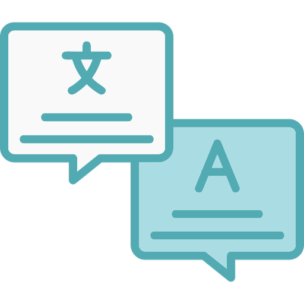

A legendagem transforma falas, sons e informações de conteúdos audiovisuais em texto, tornando a comunicação mais acessível para diferentes públicos.

O primeiro passo é transformar as falas e sons relevantes do vídeo em texto escrito.
Quando necessário, o conteúdo é traduzido e adaptado para outro idioma, mantendo seu significado original.
As legendas precisam aparecer e desaparecer nos momentos corretos para acompanhar as falas e ações da cena.
Os profissionais utilizam softwares específicos para criar, editar, sincronizar e revisar legendas.
Existem legendas traduzidas, legendas no mesmo idioma e legendas acessíveis para pessoas surdas ou com deficiência auditiva.
Legendas também descrevem sons importantes, como músicas, risadas, aplausos e efeitos sonoros.
Acesse nossa experiência única de dublar!